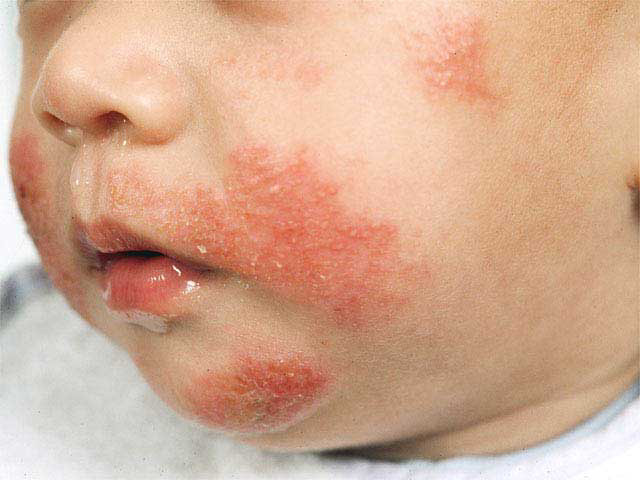
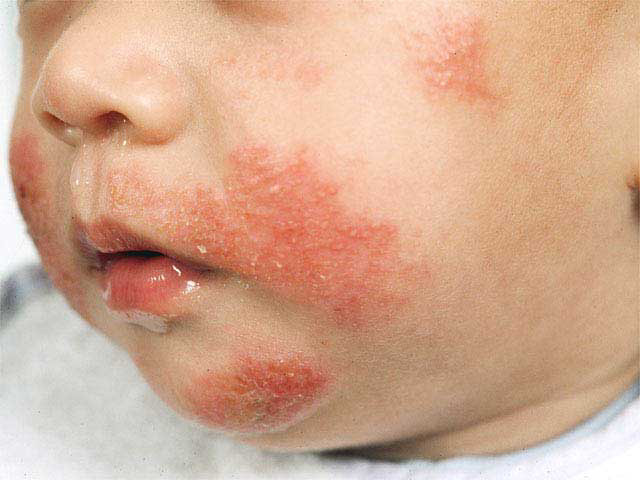

• It causes severely itchy skin rash generally seen in young children & adolescents, which may be recurrent or may last for longtime.
• It is a common disease in developed countries, around 10-20% children suffer from AD.
• In India, exact prevalence is not known, but it is supposed to be low.
Disease causing factors
• Genetic: AD is more likely to develop if one or more parents have the disease. This has been proven through genetic study of twin population as well as finding of many genes associated with disease.
• Environmental:
1. Dust, pollens, animal hairs.
2. Scientists have proposed “Hygine hypothesis” regarding role of micro organisms in early maturation & exacerbation in disease, but it not proven yet.
• Altered Immunity: Alterations in immune system (protective system which fights with disease pathogens) has been given as major factor.
• Defective barrier function of skin leading to excessive loss of water
It is commonly associated with other allergic diseases like:
1. Eczema
2. Asthma
3. Hay fever
Symptoms of AD
• It generally starts between 2-6 months of age, but can manifest in any age group.
• Children generally have dry scaly, itchy, red patches over face. Once child begins to crawl, these patches are seen over exposed parts of hands & legs.
• In older children & adolescents, patches are mainly seen on inner aspect of hands and feet.
• Many times there is
1. Discharge from patches due to presence of bacterial infection.
2. Thickness of skin due to constant scratching /rubbing.

Factors worsening AD:
• Woolen clothing
• Stress
• Excessive Heat & sweating
• Skin irritants: Perfumes, Soaps
• Habitual scratching
• Dryness of skin
• Skin infections
• Food allergens- Include dairy products, beef,
eggs, chicken, fish, wheat, citrus & berry fruits
food additives, chocolates, nuts.
• Airborne allergens
Management
• Avoidance of worsening factors: It forms most important part of disease management. With time parents tend to recognize the triggers of disease flare & simply avoiding them can help a lot.
• Proper skin care which includes
1. Take bath with lukewarm water & mild skin cleanser.
2. Air-dry or pat dry your body.
3. Apply ample amount emollient cream all over body.
4. Early detection of fissures, scratches & oozing lesions.
• Medical management
1. Antihistamines to decrease itching & irritation, especially sedative agents at night so that child has sound sleep.
2. Judicious use of low strength steroid creams for a short time, depending upon severity, sites & age of patients.
3. Antibiotics in presence of oozing & discharge.
4. Creams containing calcineurin inhibitors.
• It is a common disease in developed countries, around 10-20% children suffer from AD.
• In India, exact prevalence is not known, but it is supposed to be low.
Disease causing factors
• Genetic: AD is more likely to develop if one or more parents have the disease. This has
• Environmental:
• Altered Immunity: Alterations in immune system (protective system which fights with
• Defective barrier function of skin leading to excessive loss of water
It is commonly associated with other allergic diseases like:
Symptoms of AD
• It generally starts between 2-6 months of age, but can manifest in any age group.
• Children generally have dry scaly, itchy, red patches over face. Once child begins to crawl,
• In older children & adolescents, patches are mainly seen on inner aspect of hands and feet.
• Many times there is
 Factors worsening AD:
• Woolen clothing
• Stress
• Excessive Heat & sweating
• Skin irritants: Perfumes, Soaps
• Habitual scratching
• Dryness of skin
• Skin infections
• Food allergens- Include dairy products, beef,
• Airborne allergens
Management
• Avoidance of worsening factors: It forms most important part of disease management. With
• Proper skin care which includes
• Medical management